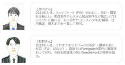

APC 技術ブログ
https://techblog.ap-com.co.jp/
株式会社エーピーコミュニケーションズの技術ブログです。
フィード

【社員インタビュー】NEEDLEWORKを用いた大規模ポリシーテスト支援の事例を紹介します！【FortiGate】
APC 技術ブログ
こんにちは！ エーピーコミュニケーションズ（APC）MBS部 ICTセールス＆コンサルチームの永井です^^ 私が所属している本社請負チームで、Fortigateを使ったFW大規模ポリシーテストがあり、案件を担当した2名の若手のエンジニアにインタビューを実施いたしました。今回は、その内容をブログ記事にしてお届けいたします！ はじめに ～NEEDLEWORKとは～ NEEDLEWORKは、Ping/Tracerouteテスト、UTM/FW ポリシーテスト、ネットワーク負荷テストなど あらゆるネットワークテストを自動化するAPCのオリジナルプロダクトになります。 手作業で150時間かかっていた1,4…
1日前

【Zscaler】使いこなそう！Company Risk Score Report
APC 技術ブログ
ZscalerのCompany Risk Score Reportの概要や使い方について解説しています。
4日前

【合格体験記】AWS DEA(AWS Certified Data Engineer - Associate)に合格できました。
APC 技術ブログ
こんにちは、株式会社エーピーコミュニケーションズ クラウド事業部の田島です。 先日、AWS DEAに合格しましたので、所感を記載していこうと思います。 保有資格 AWS SAA,SOA,DVA,SAP,DOP,SCS,DBS,ANS 点数 789点 勉強時間 勉強期間は1か月程度でしたが、実際の勉強時間は20時間程度でした。 使用した教材 AWSではじめるデータレイク: クラウドによる統合型データリポジトリ構築入門 Amazon リンク 上記の本を一部読みました。 見つけたのが遅かったので、もっと早く見つけていたら理解が早かったと思います。 データレイク、データウェアハウス、ETL周りの理解が…
5日前

【GitHub Actions】PATなしで別のリポジトリからコードをチェックアウトしたい！ 2
2
APC 技術ブログ
はじめに GitHub Appを使うメリット 実装手順 1. GitHub Appの作成 2. APP IDと秘密鍵の取得・作成 3. GitHub Appのインストール 4. SecretsにAPP IDと秘密鍵を登録 5. ワークフローファイル内で呼び出し 検証結果 終わりに はじめに こんにちは、ACS事業部の小原です。 本記事は弊社のアドベントカレンダーの15日目としての投稿になります！ 他の記事も是非チェックしてみてください↓ qiita.com さて、今回はGitHub Actions で最近使った機能について簡単に紹介しようと思います。 こんなケースに遭遇したことはありませんか？…
6日前

ネットワークセキュリティ境界でAzure PaaSのインターネットアクセスを制御しよう
APC 技術ブログ
こんにちは、ACS事業部の吉川です。 本記事は エーピーコミュニケーションズ Advent Calendar 2024 の14日目の記事です。 先月開催されたMicrosoft Igniteに合わせ ネットワークセキュリティ境界(Network Security Perimeter) なるサービスのパブリックプレビューが始まりました。 どんなサービスなのか、手を動かしながら確認してみましょう。 概要 サービスの概要を掴むために、まずは公式ドキュメントに目を通すのがよいでしょう。 learn.microsoft.com こちらのドキュメントにある以下の図から、 複数のPaaSを束ねてグループ化し…
7日前

【AWS re:Invent 2024】フルリモートワークから海外出張へ！
APC 技術ブログ
はじめに こんにちは、クラウド事業部の升谷です。 AWS re:Invent 2024 、AWSの一年のうちの最大のイベントに ラスベガスで現地参加しました！ 今回は、普段フルリモートワークの私が、 海外出張に行けた経緯と出張にて感じたことを投稿します！ 何かにチャレンジしてみたい気持ちがある方に、 ぜひ読んでもらいたいです。 re:Inventとは、イベントの中身、新サービスが紹介されたKeynoteを始めとしたセッションレポート、などは以下からご確認下さい！ techblog.ap-com.co.jp はじめに 1年半前のとりあえずやってみる！が海外出張に繋がった 初めての海外出張記 ハプ…
8日前
【AWS re:Invent 2024】初めてre:Inventに参加してみての振り返り！
APC 技術ブログ
こんにちは、エーピーコミュニケーションズの髙野です。 AWS re:Invent 2024のレポートをお届けします。 本記事では、re:Inventにはじめて参加してみての振り返りをしたいと思います！ 現地に行ったからこそ感じられたこと 現地で参加したからこそ感じることができた感覚や経験をお伝えします。 世界中のエンジニアたちの熱量 会場では、世界中から集まったエンジニアや企業が最新の技術やプロジェクトについて語り合っていました。その熱量と情熱を肌で感じることができたのは、現地参加ならではかと思います。 特に印象に残ったのは、基調講演（Keynote）での参加者たちの反応です。新しい発表がある…
8日前
【AWS re:Invent 2024】ヨガセッションにも参加！アメリカで一喜一憂！re:Invent に初めて現地参加した感想！
APC 技術ブログ
はじめに こんにちは！クラウド事業部の升谷です！ re:Invent 2024に参加し、全てが大規模なイベントに圧倒され、 ラスベガスを堪能し帰ってきました！ 帰ってきて1週間経ったところでほっと一息、 充実した re:Invent を振り返ります！ はじめに APCからは6名が参加！ 一番の興奮はやはりCEOのKeynote！ 小腹がすいたとこに現れるアメリカンな間食 せっかくのre:Invent、レアなセッションにも参加してみよう いろんな会場に足を運んでみよう 喉はやっぱり痛くなる 自分のちっぽけさを知ってまた自分の持ち場で頑張る おわりに APCからは6名が参加！ ブログをどしどし投稿…
8日前

【AWS re:Invent 2024】現地で参加してきたDay4の基調講演をレポート（Dr. Werner Vogelsによる基調講演）
APC 技術ブログ
こんにちは、エーピーコミュニケーションズの髙野です。 AWS re:Invent 2024のレポートをお届けします。 今回は現地で参加してきたDay4の基調講演（Keynote）の感想をお伝えします！ この日の基調講演はライブ会場ではなく、サテライト会場から参加してみました。 re:Inventの様子を知りたい方、興味がある方はぜひご覧ください。 目次 目次 セッション概要 セッションのポイント セッションの様子 感想 さいごに セッション概要 セッション名：Dr. Werner Vogels Keynote（Dr. Werner Vogelsによる基調講演） 概要（公式サイトから引用） Wa…
8日前
【AWS re:Invent 2024】参加レポート S3 Tablesのデモを含むS3の最新アップデートの紹介！AWS VPのセッションに参加！
APC 技術ブログ
はじめに こんにちは！クラウド事業部の升谷です。 re:Invent 2024 に現地参加してきました！ いくつかのセッションを視聴したので内容を紹介していきます！ re:Invent 2024 にはAPCから6名が参加しており、 ブログをどしどし投稿しております！ その様子もぜひチェックしてみてください！ techblog.ap-com.co.jp セッション概要 今回紹介するセッションはこちら！ AWSの方を筆頭に、3名の方によるS3やストレージにまつわる登壇です！ AWS ストレージサービスは、データ主導のイノベーションの礎として機能し、現代の企業に不可欠な構成要素を提供します。 この講…
9日前
【AWS re:Invent 2024】参加レポート AI × セキュリティを語るセッションに参加！Heros にも Villains にもなるAIとクラウド技術！
APC 技術ブログ
はじめに こんにちは！クラウド事業部の升谷です。 re:Invent 2024 に現地参加してきました！ いくつかのセッションを視聴したので内容を紹介していきます！ re:Invent 2024 にはAPCから6名が参加しました！ その様子もぜひチェックしてみてください！ techblog.ap-com.co.jp セッション概要 AIはクラウドコンピューティングの分野を完全に変革し、効率性、スケーラビリティ、パフォーマンスを向上させました。 しかし、AIの普及とアクセスの容易さは、クラウドの資産やワークフローをより広範囲なセキュリティリスクにさらす可能性もあります。 これらの新しいAIツール…
9日前
【AWS re:Invent 2024】現地で参加してきたセッションをレポート（BSI103-NEW：Amazon Q で構造化データと非構造化データから得た洞察を統合）
APC 技術ブログ
こんにちは、エーピーコミュニケーションズの髙野です。 AWS re:Invent 2024のレポートをお届けします。 今回は私が参加してきたセッションの感想をお伝えします！ re:Inventの様子を知りたい方、興味がある方はぜひご覧ください。 本記事で紹介するセッションは基調講演の中でリリースがあった、Amazon QuickSightとAmazon Q Businessの統合機能についての内容です。リリースされたばかりの機能ということで興味があったので参加しました。 以下はリリース情報になります。 aws.amazon.com 目次 目次 セッション概要 セッション内容 感想 さいごに セ…
9日前
【AWS re:Invent 2024】参加レポート 製造業者のAWS活用事例のセッションに参加！生成AIを駆使したダッシュボードの紹介
APC 技術ブログ
はじめに こんにちは！クラウド事業部の升谷です。 re:Inventとラスベガスを満喫して日本に帰ってきております！ 今回は参加したセッションの内容をご紹介します！^^/ セッション概要 製造業者は、機械の複雑なサポート問題に対処するために進化したデジタル技術を活用しています。 CognizantとTrane Technologiesは、新たな製造技術ラボを設立し、機械のパフォーマンスをリアルタイムで監視し、遠隔でトリアージを行い、問題を解決するためのソリューションを実装しました。 このセッションでは、CognizantのAPExがAWS IoTサービス上でどのように大規模な言語モデル、RAG…
10日前
Datadog Workflow Automation を AI で作ってみた
APC 技術ブログ
目次 目次 はじめに こんな方におすすめ 参考情報 実践① ワークフロー全体像の作成 新規作成画面から AI 利用画面へ AI 利用画面でプロンプトを入力 作成されたワークフローの確認 AI で出来なかったこと 実践② JavaScript のコード作成 おわりに はじめに こんにちは！クラウド事業部の野村です(*ﾟｰﾟ) Datadog には、 Workflow Automation というワークフロー機能があります。 モニターをトリガーにしたり、1日1回などのスケジュールを設定して開始でき、さまざまなクラウドやサードパーティアプリへのアクションも用意されているので、柔軟に利用できそうな機能…
10日前
【Zscaler】URLフィルタリングでワイルドカードを使用する際の注意点
APC 技術ブログ
目次 はじめに ユーザ定義のルールの作成方法 ワイルドカードを使用する際の注意点 検証 不適切な設定 適切な設定 まとめ はじめに 本記事は Zscaler Advent Calendar 2024 11日目 の投稿です。 こんにちは、エーピーコミュニケーションズ iTOC事業部BzD部0-WANの柳田です。 ZIAにはURLフィルタリングという機能がありインターネットにアクセスする際に特定のカテゴリのURLのアクセスを制限する機能があります。 その中でもURLフィルタリングではユーザ定義のルールを作成することができ、ワイルドカードを使用してURLを指定することができます。 そこで私が誤認識し…
10日前
【AWS re:Invent 2024】参加してみての振り返り
APC 技術ブログ
目次 目次 はじめに スケジュール概要 役に立ったもの 必須レベル あると快適レベル セッションの見方 会場の移動について 全体を振り返って おわりに はじめに こんにちは、株式会社エーピーコミュニケーションズの松尾です。 今回は、AWS re:Invent 2024の様子をレポートします！初めてのre:Invent、初参加者の視点で役に立つ情報をお伝えしていきます！ 本記事では、参加してみての振り返りをしてみたいと思います。 re:Inventへ参加する際の参考になれば幸いです。 スケジュール概要 re:Invent期間は月曜から金曜ですが、月曜から木曜まで参加し金曜には帰国のため発つスケジ…
10日前
【Zscaler】Zscaler Certified Delivery Specialist 認定を受けて
APC 技術ブログ
#1 はじめに #2 Zscaler の資格とZscaler Certified Delivery Specialist #3 おわりに #1 はじめに 本記事は Zscaler Advent Calendar 2024 9日目 の投稿です。 こんにちは、エーピーコミュニケーションズ 0-WANの島田です。APCでは、Zscaler社が提供している認定資格の取得を奨励することで、エンジニアたちがベースとなる知識・スキルを揃え、より良いサービスを提供できるように努めております。近頃の社内では、最上級資格の1つである Zscaler Certified Delivery Specialist の認…
11日前
【AWS re:Invent 2024】re:Inventの打ち上げ！re:Playに参加！ 会場・ご飯・アーティストの紹介！
APC 技術ブログ
はじめに こんにちは！クラウド事業部の升谷です。 AWSの最大のイベント、re:Invent 2024がついに、、終わってしまいました。 あっという間に終わってしまったものの、 振り返ると濃くて充実した日々でした！ そんなイベントの締めくくりにはお祭りだ！ と言わんばかりに最終日の re:Play は盛り上がりました！ 今年の re:Play の様子をレポートしていきます！ はじめに re:Playとは？ re:Play への持ち物 いざ Festival Grounds へ！ re:Play スタート！ まずは腹ごしらえ SOUTHAREA と NORTHAREA では体を動かして遊ぼう！ …
11日前
【AWS re:Invent 2024】参加レポート -ライトニングトーク編-
APC 技術ブログ
目次 目次 はじめに セッション情報 セッション・会場の様子 まとめ おわりに はじめに こんにちは、株式会社エーピーコミュニケーションズの松尾です。 今回は、AWS re:Invent 2024の様子を現地からレポートします！初めてのre:Invent、初参加者の視点で役に立つ情報をお伝えしていきます！ 本記事では「 ライトニングトークセッション」にフォーカスしていきます。 re:Inventへ参加する際の参考になれば幸いです。 セッション情報 参加したのは「ライトニングトーク」というタイプのセッションです。20分間の短い時間で行われるプレゼンテーションのようなものです。 私が参加したセッシ…
11日前
【AWS re:Invent 2024】参加レポート -チョークトーク編-
APC 技術ブログ
目次 目次 はじめに セッション情報 セッション・会場の様子 まとめ おわりに はじめに こんにちは、株式会社エーピーコミュニケーションズの松尾です。 今回は、AWS re:Invent 2024の様子を現地からレポートします！初めてのre:Invent、初参加者の視点で役に立つ情報をお伝えしていきます！ 本記事では「チョークトークセッション 」にフォーカスしていきます。 re:Inventへ参加する際の参考になれば幸いです。 セッション情報 今回は参加した2つのセッションを紹介します。チョークトークです。 チョークトーク BIZ209 | Unlock higher email delive…
11日前
【AWS re:Invent 2024】参加レポート -ワークショップ編-
APC 技術ブログ
目次 目次 はじめに セッション概要 セッション・会場の様子 まとめ おわりに はじめに こんにちは、株式会社エーピーコミュニケーションズの松尾です。 今回は、AWS re:Invent 2024の様子を現地からレポートします！初めてのre:Invent、初参加者の視点で役に立つ情報をお伝えしていきます！ 本記事では参加したワークショップセッションにフォーカスしていきます。 re:Inventへ参加する際の参考になれば幸いです。 セッション概要 ワークショップ BIZ205 | Simplify your email with Amazon SES Mail Manager and Amazo…
11日前
【AWS re:Invent 2024】現地で参加してきたDay2の基調講演をレポート（Matt Garman CEOによる基調講演）
APC 技術ブログ
こんにちは、エーピーコミュニケーションズの髙野です。 AWS re:Invent 2024のレポートをお届けします。 今回は現地で参加してきたDay2の基調講演（KEY002）の感想をお伝えします！ 例年、Day2の基調講演では新サービスのリリースなど大きな発表があることが多く、re:Inventの目玉イベントとなっております。 re:Inventの様子を知りたい方、興味がある方はぜひご覧ください。 目次 目次 セッションの概要 セッションの様子 リリース情報まとめ さいごに セッションの概要 セッション名：KEY002 | CEO Keynote with Matt Garman（マット・ガ…
11日前
【AWS re:Invent 2024】参加レポート: The AWS approach to secure generative AI (SEC323)
APC 技術ブログ
こんにちは、クラウド事業部の山路です。今回はタイトルのセッションを見てきたので、概要と会場の様子を共有します。AWS re:Inventの様子を知りたい方、タイトルにあるセッションに興味がある方はご覧ください。 セッション概要 At AWS, safeguarding the security and confidentiality of customers' workloads is a top priority. AWS Artificial Intelligence (AI) infrastructure and services have built-in security and p…
13日前
Azure Application InsightsでBackstageをmonitorする
APC 技術ブログ
Backstage OpenTelemtry こんにちは。ACS事業部 亀崎です。 みなさんはBackstageにはOpenTelemetryを用いたmonitring機能が利用できることをご存知でしょうか。 backstage.io こちらを導入すれば簡単に以下のような情報を得られるようになります。 Backstageは様々なモジュールを組み合わせて機能します。このため、どこで問題が起きているのか、どこの処理に時間がかかっているのかなどを特定するのに苦労します。OpenTelemetry、特にTracingが可能なことはそうした特定に役立ちます。 今回はBackstage OpenTelem…
14日前
【Java】多要素認証実装方法の紹介①
APC 技術ブログ
はじめに 多要素認証とは 多段階認証と多要素認証の違い 今回実装する多要素認証の実装方式について 開発環境 前提条件 サンプルコードおよび解説 1.多要素認証実施用サーブレットファイル(MfaAuthExample.java) 定数の設定 SECRET_KEY_ALGOTITHM：ワンタイムトークン生成時のアルゴリズム AUTH_CODE：ユーザーに紐づく認証コード(秘密鍵) WINDOW_SIZE：時間windowのサイズ 処理プログラム：doPostメソッド内の記述 ①入力値の取得 ②ワンタイムトークン認証の実行 ③実行結果による表示判定と画面表示(仮実装) 処理プログラム：checkTo…
15日前
【AWS re:Invent 2024】EXPOの様子を現地レポート
APC 技術ブログ
こんにちは、エーピーコミュニケーションズの髙野です。 AWS re:Invent 2024のレポートをお届けします。 今回は「EXPOブースの様子」をご紹介します！ re:Inventの様子を知りたい方、興味がある方はぜひご覧ください。 目次 目次 EXPOとは 開場時間 現地の様子 さいごに EXPOとは EXPOはAWSやAWSのパートナー企業がブースを出展して自社の製品やサービスを紹介している場所です。 各企業、Tシャツやステッカーなどのノベルティを用意しているのでたくさんの企業をまわって、ノベルティを集めるのも、re:Inventならではの楽しみです！！ 詳細はこちらをご覧ください。 …
15日前
【AWS re:Invent 2024】参加レポート: Observability strategies for Amazon EKS workloads (Lightning talk) (KUB323)
APC 技術ブログ
こんにちは、クラウド事業部の山路です。今回はタイトルのセッションを見てきたので、概要と会場の様子を共有します。AWS re:Inventの様子を知りたい方、タイトルにあるセッションに興味がある方はご覧ください。 セッション概要 Containerized applications deployed on Amazon EKS present unique observability challenges. This lightning talk explores effective strategies to gain visibility into your Amazon EKS workl…
15日前
New RelicのAlertのStreaming Methodでハマった話（Event flowとEvent timerの違い）
APC 技術ブログ
こちらは qiita.com qiita.com の6日目です。 Azureを始めとしたクラウドでインフラをTerraformなどを活用しながら構築・運用しているエンジニアですが、今年に入ってからNew Relicに入門しました。 直近はAzure Monitorを使っていて、そちらではKQLというクエリ言語でグラフやアラートを書いていたんですが、 NRQLが大枠ではKQLと近いようなクエリ言語だったので特に違和感なくNew Relicを使い始められました。 APMやSynthetic MonitoringといったNew Relicならではの機能を始め、豊富なメニューから様々な情報が得られてグ…
15日前
【AWS re:Invent 2024】メイン会場 The Venetian の様子をお届け！
APC 技術ブログ
はじめに こんにちは！ クラウド事業部の升谷です。 APCは今年もAWS re:Inventに参加しています！ 12月2日から始まったイベントも後半戦となってきました。 今回は会場の様子をお届けします！ MAP reinvent.awsevents.com 会場がラスベガス中心地にちらばっていることに、私はまず驚きました！！ AWS Summitを始め、日本で開催される大きなイベントは、 1つの展示場の中をぐるぐる歩き回り、1日その中で楽しむパターンが主流だと思います。 一方、AWS re:Invent（アメリカのイベント全般かもしれまでんが）はまずこの価値観を殴りにきます。 複数のコンベンシ…
16日前
Datadog メトリクスモニターでのグループ化とは？マルチアラートとは？
APC 技術ブログ
目次 目次 はじめに こういうところで出てくる言葉、グループ化 マルチアラートを設定したい、、 ダッシュボードにモニターサマリ―ウィジェットを配置したいが、、 グループ化とは、ズバリ まずはメトリクスエクスプローラーでグループ化を追ってみる グループ化を利用したクエリでマルチモニターを設定する マルチアラートモニターにするとなにがよいか モニターサマリ―ウィジェットのタイプは？ おわりに はじめに こんにちは！クラウド事業部の野村です(*ﾟｰﾟ) Datadog のメトリクスモニターを設定していると、 Group という用語が良く出てきます。 公式ドキュメントで明確に説明されたページがなく、「…
16日前